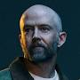
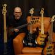
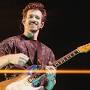

Podrobný přehled členů kapely Linkin Park
Mike Shinoda
Mike Shinoda je jedním ze zakládajících členů Linkin Park a klíčovou osobností kapely. Je známý jako rapper, zpěvák, kytarista, klávesista a producent. Ve skladbách Linkin Park často spojuje rap s rockem a elektronickými prvky, čímž se podílí na unikátním zvuku kapely. Kromě hudby je také vizuálním umělcem a grafickým designérem – podílel se na tvorbě obalů alb a vizuálních projektů kapely. Po smrti Chestera Benningtona se stal hlavní silou, která udržela kapelu při životě, a podílel se na vydávání sólové hudby, například alba Post Traumatic (2018), kde reflektoval svou zkušenost se ztrátou a truchlením. Mike je známý svou pracovitostí, kreativním myšlením a schopností experimentovat s různými hudebními styly, což výrazně ovlivnilo hudební směr Linkin Park.
Brad Delson
Brad Delson, zakládající kytarista, je známý svým specifickým stylem hry, který dokáže spojit melodii s tvrdými riffy. Brad se podílí na produkci a aranžmá skladeb a často se stará o zvukové detaily, které dělají skladby Linkin Park tak charakteristickými. Jeho technická přesnost a smysl pro dynamiku jsou klíčové pro rockový základ kapely.
Dave “Phoenix” Farrell

Dave “Phoenix” Farrell je basista, který se k Linkin Park připojil krátce po vzniku kapely a stal se jejím stabilním členem. Jeho hratelnost a rytmické cítění jsou pilířem zvuku kapely. Phoenix se během let stal nejen hudební oporou, ale i spolehlivým členem, který pomáhá udržovat soudržnost kapely, zejména v těžkých obdobích po ztrátě Chestera.
Joe Hahn
Joe Hahn, známý také jako „Mr. Hahn“, je DJ, sampler a vizuální umělec kapely. Jeho scratchování, elektronické efekty a vizuální projekce tvoří výraznou součást koncertních show Linkin Park. Joe také přispívá k experimentálním skladbám a elektronickým prvkům, což často přináší kapelě unikátní zvukový charakter.
Emily Armstrong
Emily Armstrong je nová zpěvačka, která se připojila ke kapele po smrti Chestera. Přináší nový hlas a energii, díky které může kapela pokračovat ve své hudební tvorbě. Její přítomnost symbolizuje nový začátek a revitalizaci kapely.
Colin Brittain
Colin Brittain je bubeník a nový člen současné sestavy. Přináší moderní rytmické prvky a pomáhá kapele obnovit dynamiku po delší pauze.
Chester Bennington
Chester Bennington byl hlavním zpěvákem od roku 1999 až do své tragické smrti v roce 2017. Jeho emotivní a silný hlas definoval zvuk kapely a umožnil jí kombinovat tvrdý rock, rap a melodické prvky. Chester byl také známý svou otevřeností ohledně osobních bojů, což se odrazilo v textech kapely a rezonovalo s miliony fanoušků. Jeho odchod znamenal pro Linkin Park obrovskou ztrátu, ale jeho hudba a vliv zůstávají
Rob Bourdon
Rob Bourdon je bubeník a zakládající člen Linkin Park. Jeho precizní a energická hra poskytuje základní rytmus pro všechny skladby kapely. Rob je známý svou disciplínou, schopností udržet tempo při živých koncertech a svou rolí jako stabilní pilíř kapely.
Scott Koziol

Scott Koziol hrál krátce na basovou kytaru v počátcích kapely a přispěl k jejímu ranému zvuku, než Phoenix převzal tuto roli.
Alex Feder

Alex Feder je méně známý spolupracovník, který se podílel na doprovodných projektech a nahrávkách, především ve studiových nebo experimentálních aktivitách.